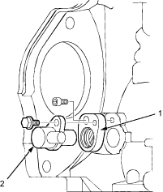
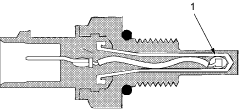
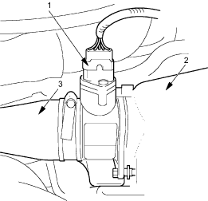

Barometric Pressure (BARO) Sensor
The BARO sensor is inside the ECM. It converts atmospheric pressure into a voltage signal that modifies the basic duration of the fuel injection discharge.
Crankshaft Position (CKP) Sensor
The CKP sensor detects engine speed and determines ignition timing and timing for fuel injection of each cylinder.

- SHIM
- CKP SENSOR
Engine Coolant Temperature (ECT) Sensor
The ECT sensor is a temperature dependent resistor (thermistor). The resistor of the thermistor decreases as the engine coolant temperature increases.

- THERMISTOR
MAF/Intake Air Temperature (IAT) Sensor
The IAT sensor is a temperature dependant resistor (thermistor). The resistance of the thermistor decreases as the intake air temperature increases.

- MAF/IAT SENSOR
- AIR CLEANER CASE
- AIR DUCT